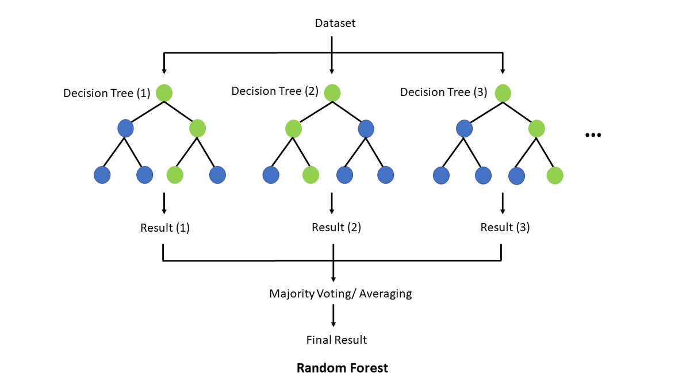
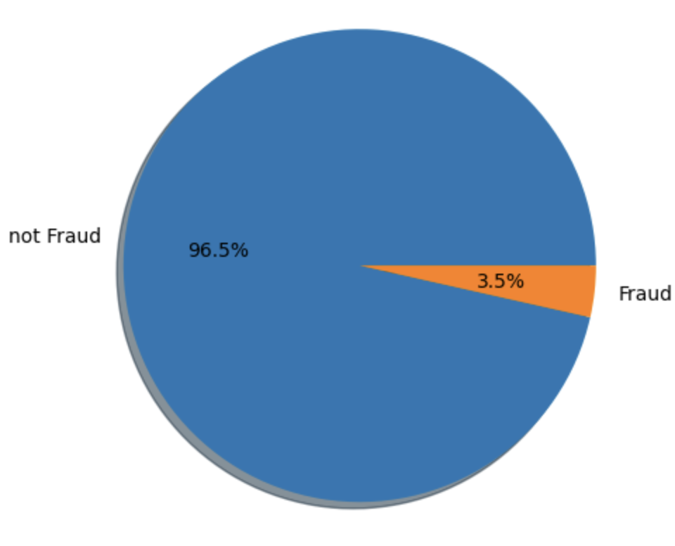
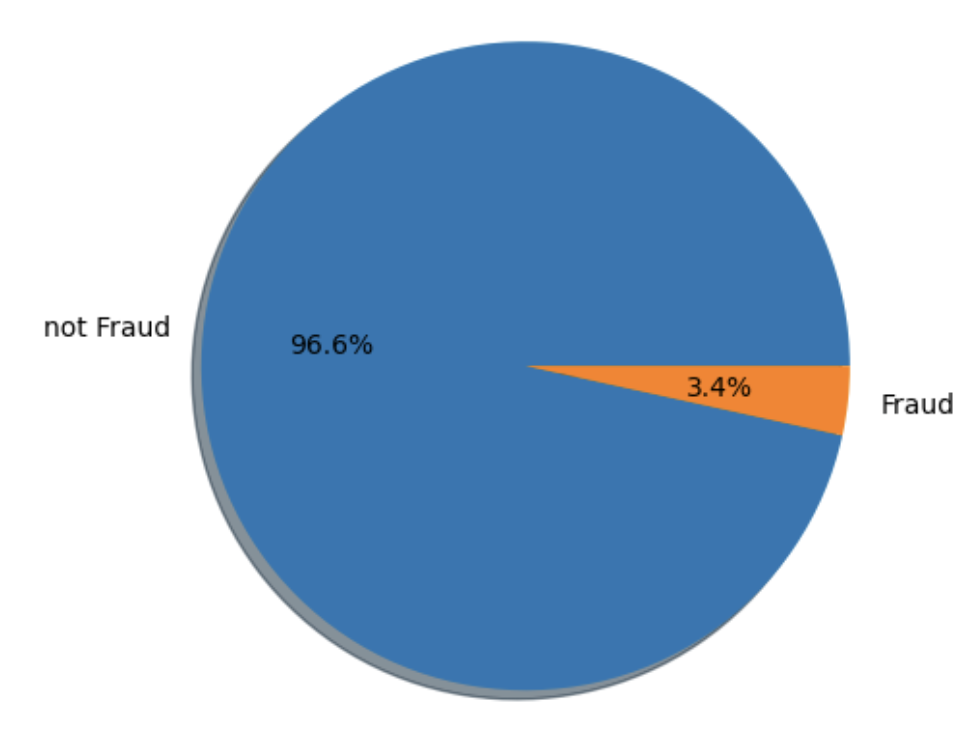
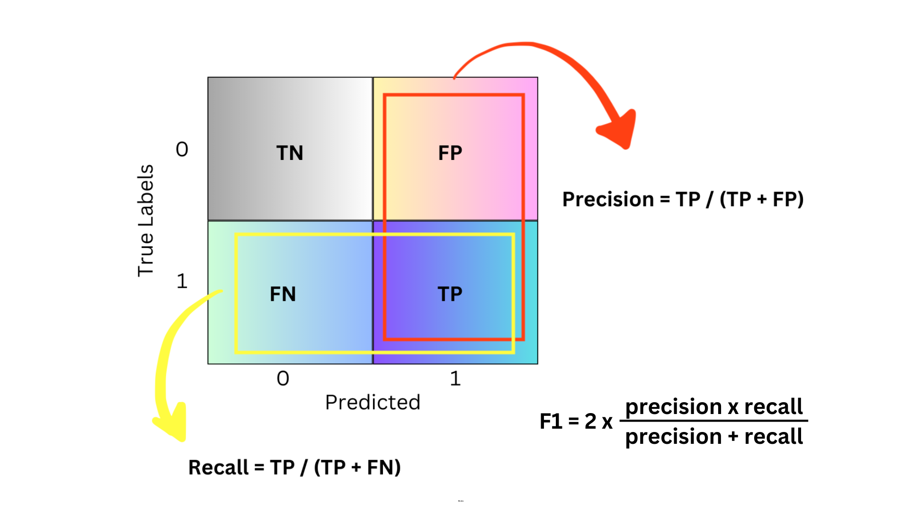

In this blog post, we’ll explore how to harness the power of Random Forest for effective fraud detection, especially when dealing with large and imbalanced datasets. We’ll break down the essentials of this algorithm and walk through its application in a Kaggle competition, offering practical insights and hands-on experience.
The Theory Behind It All
It’s quite ironic that we all use the Decision Tree technique in our daily lives without even thinking about it. Consider how you choose an outfit for an occasion—you’re making a series of decisions between items. Or when you’re organizing your chores, you decide which task to tackle first. Similarly, businesses leverage this methodology as a supervised machine learning technique – in an ensemble format – to make better decisions and boost profits. Decision Trees are particularly effective with tabular datasets, which are commonly used and generated by organizations. However, they are known for their issues with bias and variance: simple trees often suffer from high bias, while complex trees can have high variance.
To understand Decision Trees, let’s first look at where this algorithm originates. From top down perspective, it all begins with ensemble methods—techniques that combine multiple machine learning models to enhance performance. The two main ensemble methods are bagging and boosting. We’ll explore these methods, their advantages and disadvantages, and then dive into bagging, focusing specifically on Decision Trees and Random Forests.
Bagging
Bagging, which stands for Bootstrap Aggregating, is a technique designed to enhance the performance of machine learning algorithms by reducing variance and preventing overfitting.
How It Works:
- Bootstrap Sampling: Multiple subsets of the training data are created by sampling with replacement.
- Training: A model is trained independently on each subset.
- Aggregation: The predictions from each model are combined, typically by voting for classification or averaging for regression.
Pros:
- Reduces variance and helps prevent overfitting.
- Simple to implement and understand.
- Particularly effective with high-variance models like decision trees.
Cons:
- Can be computationally expensive since it involves training multiple models.
- May not improve performance if the base models are already strong.
Random Forest
Random Forest is an ensemble method that extends bagging by combining multiple decision trees to improve overall performance and robustness.
Decision trees are a fundamental and versatile machine learning algorithm used for both classification and regression tasks. They work by splitting the data into branches based on feature values to make predictions.

How It Works:
Bootstrapping: Multiple subsets of the data are created by sampling with replacement.
Random Feature Selection: At each split in a tree, a random subset of features is considered. This helps to decorrelate the trees and improve the model’s performance.
Aggregation: Predictions from all the trees are combined to make the final prediction, either by voting for classification or averaging for regression.
Random Forest can provide valuable insights into feature importance. It evaluates how much each feature contributes to reducing impurity and improving model accuracy. Features that significantly impact these metrics are considered important. A unique perspective on how random forests really work was done by a a Kaggle Competition Grandmaster. The author does an excellent job of explaining the concepts in a very interesting way.
Boosting
Boosting improves model performance by focusing on correcting the errors made by previous models in the sequence.
How it Works:
Sequential Training: Models are trained one after another, with each model trying to correct the errors of its predecessor.
Weighted Voting: The final prediction is made by combining the predictions of all models, with more weight given to models that performed better.
Pros:
Can achieve high accuracy by focusing on hard-to-predict examples.
Often provides better performance than bagging for many problems.
Cons:
Can be prone to overfitting if not tuned properly.
More complex to implement and understand compared to bagging.

To summarize, ensemble methods like bagging and boosting are powerful techniques for improving model performance. Bagging, including methods like Random Forest, helps to reduce variance and overfitting by combining multiple models. Boosting, on the other hand, focuses on correcting errors from previous models, often achieving higher accuracy but with a risk of overfitting.
Kaggle Competition
From here on out, we’ll be diving into the IEEE-CIS Fraud Detection Kaggle Competition. Our goal is to use a Random Forest classifier to predict the probability of an online transaction being fraudulent.
The data is split into two datasets: “identity” and “transaction,” which are linked by TransactionID. Keep in mind that not all transactions have matching identity information. You can check out more details about the competition here. Now, let’s get started with the implementation!
Importing Libraries
We begin by importing the necessary libraries. In this case, we will use the scikit-learn package for training our model and performing preprocessing on the dataset.
# Data Analysis
import numpy as np
import pandas as pd
# Data Visualization
from matplotlib import pyplot as plt
import seaborn as sns
# Machine Learning
from sklearn.impute import SimpleImputer
from sklearn.preprocessing import StandardScaler
from imblearn.over_sampling import SMOTE
from sklearn.metrics import roc_auc_score
from sklearn.ensemble import RandomForestClassifier
import sklearn.metrics as metrics
from sklearn.metrics import confusion_matrix as cm
# Warnings
import warnings
warnings.filterwarnings('ignore')Loading and cleaning data
The dataset we are given is very large, so we will create a function to reduce its memory usage by changing the data types of its columns to more memory-efficient types. This will help us achieve faster processing and consume less storage.
def reduce_mem_usage(df, verbose=True):
numerics = ['int16', 'int32', 'int64', 'float16', 'float32', 'float64']
start_mem = df.memory_usage().sum() / 1024**2
for col in df.columns:
col_type = df[col].dtypes
if col_type in numerics:
c_min = df[col].min()
c_max = df[col].max()
if str(col_type)[:3] == 'int':
if c_min > np.iinfo(np.int8).min and c_max < np.iinfo(np.int8).max:
df[col] = df[col].astype(np.int8)
elif c_min > np.iinfo(np.int16).min and c_max < np.iinfo(np.int16).max:
df[col] = df[col].astype(np.int16)
...
end_mem = df.memory_usage().sum() / 1024**2
if verbose: print('Mem. usage decreased to {:5.2f} Mb ({:.1f}% reduction)'.format(end_mem, 100 * (start_mem - end_mem) / start_mem))
return dfNow, we are ready to load our data.
# Loading train_transaction data
train_transaction = pd.read_csv('../input/ieee-fraud-detection/train_transaction.csv')
print(train_transaction.shape)
train_transaction = reduce_mem_usage(train_transaction)
train_transaction.head()(590540, 394)
Mem. usage decreased to 542.35 Mb (69.4% reduction)
# Loading train_identity data
train_identity = pd.read_csv('../input/ieee-fraud-detection/train_identity.csv')
print(train_identity.shape)
train_identity = reduce_mem_usage(train_identity)
train_identity.head()(144233, 41)
Mem. usage decreased to 25.86 Mb (42.7% reduction)
# Merging transaction and identity train data
train_df = pd.merge(train_transaction, train_identity, how='left')
print(train_df.shape)
len_train_df = len(train_df)
del train_transaction, train_identity
train_df.head()(590540, 434)
You can load and merge your testing dataset using a similar pattern.
Lastly, we need to create our submission DataFrame.
0Luckily, there are no duplicates in our dataset!
Preprocessing
In the previous section, we merged our transaction and identity training datasets, giving us a total of 434 columns, including the isFraud label. Our training dataset has 590,540 samples, and the testing dataset has 506,691 records. We also checked for any duplicates in the data.
We’ve noticed that there are quite a few missing values in our datasets. To handle this, we’ll keep columns with at least 80% of the data and drop those with more than 20% missing values. To make things easier, we’ll combine the training and testing datasets while we clean up the data.
combined_df = pd.concat([train_df.drop(columns=['isFraud', 'TransactionID']), test_df.drop(columns='TransactionID')])
# Dependant variable
y = train_df.isFraud
# Dropping columns with more than 20% missing values
miss_val = combined_df.isnull().sum() / len(combined_df)
combined_pruned_df = combined_df.drop(columns=miss_val[miss_val > 0.2].index)
del combined_df, train_df, test_dfAs a result, we are left with only 180 columns out of 434 after removing those with more than 20% missing values. We have also removed the TransactionID column, as it does not provide useful information for prediction.
The next step is to address the missing values in the remaining columns. For numerical columns, we will impute missing values with the median, while for categorical columns, we will use the most frequent category.
# Filtering numerical data
num_pruned_df = combined_pruned_df.select_dtypes(include=np.number)
print(num_pruned_df.shape)
# Filtering categorical data
cat_pruned_df = combined_pruned_df.select_dtypes(exclude=np.number)
print(cat_pruned_df.shape)
del combined_pruned_df
# Filling missing values for numerical columns
imp_median = SimpleImputer(missing_values=np.nan, strategy='median')
num_df = pd.DataFrame(imp_median.fit_transform(num_pruned_df), columns=num_pruned_df.columns)
del num_pruned_df
print(num_df.shape)
# Filling missing values for categorical columns
imp_max = SimpleImputer(missing_values=np.nan, strategy='most_frequent')
cat_df = pd.DataFrame(imp_max.fit_transform(cat_pruned_df), columns=cat_pruned_df.columns)
del cat_pruned_df
print(cat_df.shape)
# Concatinating numerical and categorical columns
combined_df = pd.concat([num_df, cat_df], axis=1)
del num_df, cat_df
# Checking for missing values
print(f'Total missing values: {combined_df.isnull().sum().sum()}')
print(combined_df.shape)(1097231, 176)
(1097231, 4)
(1097231, 176)
(1097231, 4)
Total missing values: 0
(1097231, 180)Next, we need to convert our categorical columns into numerical representations. We can accomplish this using the get_dummies method.
# One-hot encoding
combined_df_encoded = pd.get_dummies(combined_df, drop_first=True)
print(combined_df_encoded.shape)
del combined_df
combined_df_encoded.head()(1097231, 245)
As you recall, we combined the training and testing datasets to speed up data cleaning. Now, we need to separate them again as we move forward with data manipulation on the training set.
# Separating train and test data
X = combined_df_encoded.iloc[:len_train_df]
print(X.shape)
test = combined_df_encoded.iloc[len_train_df:]
print(test.shape)
del combined_df_encoded(590540, 245)
(506691, 245)train = pd.concat([X, y], axis=1)
train.sort_values('TransactionDT', inplace=True)
X = train.drop(columns=['isFraud'])
# or X = train.drop(['isFraud'], axis=1)
y = train['isFraud']
splitting_index = int(0.8 * len(X))
X_train = X.iloc[:splitting_index]
X_val = X.iloc[splitting_index:]
y_train = y.iloc[:splitting_index]
y_val = y.iloc[splitting_index:]
print(X_train.shape, X_val.shape, y_train.shape, y_val.shape)
del train, y(472432, 245) (118108, 245) (472432,) (118108,)One noteworthy point to mention is that you do not need to normalize or scale your data features for Random Forest. Scaling is primarily important in algorithms that are distance-based and rely on Euclidean distance. Random Forest is a tree-based model and, therefore, does not require feature scaling.
Furthermore, I would argue that it’s not only unnecessary but also highly discouraged to scale features for Random Forest. By not scaling features, I was able to boost the accuracy by more than 7%.
The next thing we need to look into is the distribution of classes. We observed a significant class imbalance. This pattern is also evident in the validation set.
# Class imbalance check
print(pd.value_counts(y_train))
plt.pie(y_train.value_counts(), labels=['not Fraud', 'Fraud'], autopct='%0.1f%%', shadow='dict')
plt.axis('equal')
plt.show()isFraud
0 455833
1 16599
Name: count, dtype: int64
plt.pie(y_val.value_counts(), labels=['not Fraud', 'Fraud'], autopct='%0.1f%%', shadow='dict')
plt.axis('equal')
plt.show()
The class not Fraud is much more frequent than Fraud. Detecting the minority class (fraudulent transactions) is more important than the majority class (non-fraudulent transactions). Our first attempt was to use SMOTE (Synthetic Minority Over-sampling Technique), to over sample our minority class.
Although this approach works well, it takes quite a long time to train. Instead, we will use the class_weight='balanced' argument in our RandomForestClassifier to improve training efficiency.
If you’re interested in checking out the SMOTE approach, I’ll share the link to the Kaggle notebook I worked on at the end. Feel free to take a look there!
Machine Learning model
As we mentioned earlier, we’ll be using a random forest to train our model. The main reason we’re choosing this algorithm is for practice. We’ll dive into its performance using ROC curves, a confusion matrix, and other metrics. We’ll also pinpoint any issues our model runs into and suggest some improvements for future work.
Training Model
Here, we use 50% of the samples to train each base estimator and require a minimum of 80 samples to split an internal node. Instead of using SMOTE to approach class imbalance issue, we use the class_weight parameter to give more weight to the minority class. So far, this approach has yielded the best results. Another idea could be to reduce dimensionality using PCA, which is an interesting question to explore.
ROC Curve
The ROC curve, which stands for Receiver Operating Characteristic curve, is a graphical representation of a binary classifier’s performance (in our case fraud/ not fraud) across different classification thresholds. It plots the True Positive Rate (TPR) against the False Positive Rate (FPR). You can see our ROC blue curve below.
On the other hand, ROC AUC, or Receiver Operating Characteristic Area Under the Curve, is a single metric that summarizes a classifier’s performance over all possible classification thresholds. The ROC AUC score is obtained by measuring the area under the ROC curve. In our example it is 0.89, which is the area under the blue curve [source].
The ROC AUC score indicates how well a classifier distinguishes between positive and negative classes, with values ranging from 0 to 1. A higher ROC AUC score signifies better performance: a perfect model achieves an AUC of 1, whereas a random model scores 0.5.
Do you see why? If the model is performing poorly, the AUC would be equal to the area under the red dotted line, which is 0.5 ( = 1 * 1 / 2). The more concave the blue line appears, the more it resembles a rectangle, resulting in an area closer to 1 (since the units of the sides are one as well).
print(f'Validation AUC = {roc_auc_score(y_val, y_probs)}')
# plotting ROC Curve
fpr, tpr, threshold = metrics.roc_curve(y_val, y_probs[:])
roc_auc = metrics.auc(fpr, tpr)
plt.figure(figsize=(12,6))
plt.title('Receiver Operating Characteristic')
plt.plot(fpr, tpr, 'b', label='AUC=%0.2f' % roc_auc)
...
plt.show()Validation AUC = 0.8904434324215795
Precision and Recall
Let’s get back to basics. When you’re evaluating how well a classification model is performing, you need to be familiar with three key metrics: precision, recall, and F1 score. These are especially important when your data is imbalanced, or when the cost of different types of errors varies.
Precision is all about accuracy. Of all the items that the model labeled as positive, how many are actually positive?
Recall is about coverage. Of all the actual positive items, how many were correctly identified by the model?
And the F1 score? It’s like the perfect combo of both precision and recall, providing a single metric that balances the two. It’s super useful when you need a balance between them.
When I was digging through different articles online to get a better grip on these terms, I stumbled upon a comprehensive article by Teemu Kanstrén. He points out that the basis of precision, recall, and F1 score comes from understanding concepts like True Positive, True Negative, False Positive, and False Negative.
Here’s a quick table to break down what each term means:
| Prediction | Actual value | Type | Explanation |
|---|---|---|---|
| 1 | 1 | True Positive | Predicted Positive and was Positive |
| 0 | 0 | True Negative | Predicted Negative and was Negative |
| 1 | 0 | False Positive | Predicted Positive but was Negative |
| 0 | 1 | False Negative | Predicted Negative but was Positive |
To really get a handle on what each term means, I’ve put together a confusion matrix to illustrate it below (and don’t worry, we’ll dive into the details of the confusion matrix soon).

These terms give us some pretty useful insights. For example, when the F1 score is at its peak, it means we have the best balance between precision and recall. It’s a good sign that the model is doing well at spotting positive cases without missing too many or making a lot of false positives.
At this maximum F1 score, we also get a specific threshold value. The threshold is used to decide if a predicted probability should be classified as positive or negative in classification models.
For example, if the threshold is set to 0.5, any prediction with a probability above 0.5 is classified as positive (fraudulent), and anything below 0.5 is classified as negative (not fraudulent).
# Calculate precision and recall for different thresholds
precision, recall, thresholds = precision_recall_curve(y_val, y_probs)
# Calculate F1 score
f1_scores = 2 * (precision * recall) / (precision + recall)
# Find the threshold that gives the maximum F1 score
optimal_threshold = thresholds[np.argmax(f1_scores)]
print(f"Optimal Threshold: {optimal_threshold}")Optimal Threshold: 0.650943583810778Confusion Matrix
In our case, the threshold is set to 0.65. We’ll use this value to label our predicted probabilities as 0 or 1 because the confusion matrix only works with discrete numbers, not probabilities.
A confusion matrix is a table that helps us evaluate how well our classification model is performing. It shows counts for true positives, true negatives, false positives, and false negatives. We’ve already covered these terms in a table in the previous section.
# Confusion matrix
y_probs_labels = (y_probs[:] >= optimal_threshold).astype(int)
# y_val contains the true binary labels
conf_matrix = cm(y_val, y_probs_labels)
categories = ['Zero', 'One']
# Display the confusion matrix
sns.heatmap(
conf_matrix / np.sum(conf_matrix), # Normalized by the total sum for percentages
annot=True, # Show the annotations
annot_kws={'size': 16}, # Size of annotations
cmap='Blues', # Color map
fmt='.2%', # Format the annotation to show percentage
xticklabels=categories, # Set x-axis labels
yticklabels=categories, # Set y-axis labels
cbar_kws={'label': 'Percentage of Total'} # Add color bar with label
)
plt.xlabel('Predicted Labels') # X-axis label
plt.ylabel('True Labels') # Y-axis label
plt.title('Normalized Confusion Matrix') # Title of the plot
plt.show()Looking at the figure below, we can get some useful insights. The total of all the percentages should add up to 100. Ideally, the diagonal boxes (representing correct predictions) should have the highest percentages. The 95.46% portion refers to True Negatives, which are the non-fraudulent transactions. Our model did a pretty good job here, as this aligns closely with the original 96.6% of non-fraudulent transactions (or 114,092 in total) in the validation dataset (take a look at the pie charts above again).
However, the model only detected 1.41% of the 3.4% fraudulent transactions, missing almost half of them. This is concerning because we need a system that can reliably spot any fraudulent transactions. Since there are far more “normal” transactions than “fraud” ones, the model tends to generalize that almost everything is safe. So, while our model didn’t perform well in this area, there’s definitely room for improvement!

Feature Importance
We’ve already talked about why feature importance is important and what it’s used for. Now, let’s take a look at the top 20 most important features in our dataset.
# Create a pandas Series from the feature importances
feature_series = pd.Series(rfc.feature_importances_, index=X.columns)
# Get the top 20 features in descending order
top_features = feature_series.nlargest(20)
# Create a DataFrame for seaborn
top_features_df = top_features.reset_index()
top_features_df.columns = ['Feature', 'Importance']
...
plt.show()
Predict and submit
And finally, we need to test our unseen dataset and get ready to submit our results to the leaderboard!
# Predicting the test data
predictions = rfc.predict_proba(test)
print(predictions.shape)
submission['isFraud'] = predictions[:, 1]
print(submission.shape)
submission.head()(506691, 2)
(506691, 2)
# Submitting results
submission.to_csv('submission.csv', index=False)
print('Submission is successful !')Submission is successful !And that’s a wrap! If you could follow along without any issues, it means I’ve done a good job of sharing my knowledge! And if there was any ambiguity or you just want to share any comments or suggestions, let me know!
Lastly, I wanted to share some useful links that helped me along the way as well as my written notebook on Kaggle.
Cheers :)